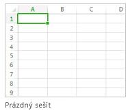

Přivítáme také Excel
K čemu je nám Excel ?
Excel je velice potřebná aplikace k vytvoření nějaké tabulky tudíž to můžeme nazvat jako takzvaný tabulkový procesor
Vytváření nového sešitu

Vytvoření sešitu / tabulky
-
Klikněte na kartu Soubor a poté na položku Nový
-
V části Nový klikněte na Prázdný sešit
Je zde spousta dalších úkolů, ale nebudu to tady vypisovat
|

Uložení sešitu
-
V části Uložit jako vyberte, kam chcete svůj sešit uložit, poté to nějak pojmenujte a dejte Uložit
-
Klikněte na tlačítko Uložit na panelu nástrojů Rychlý přístup nebo stiskněte kombinaci kláves Ctrl+S
|